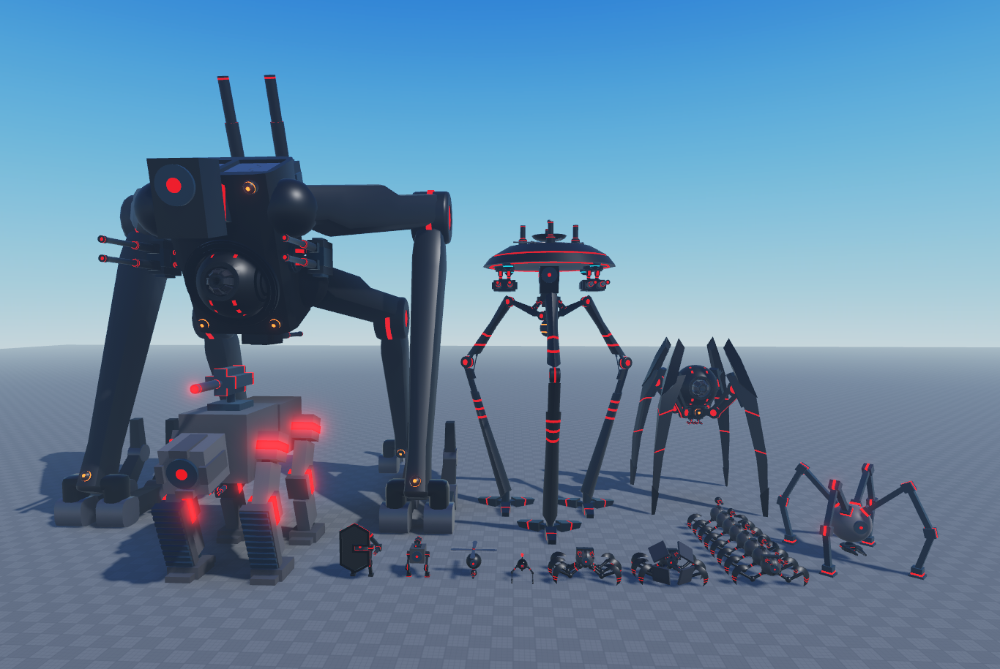
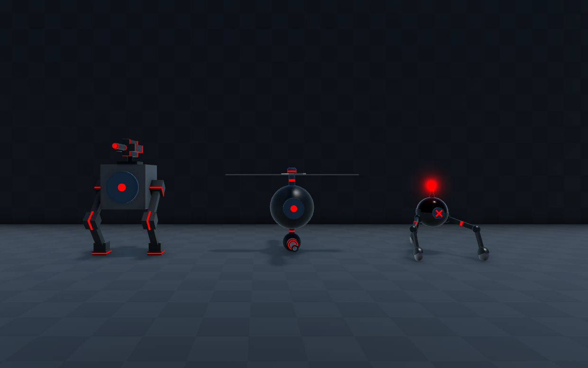
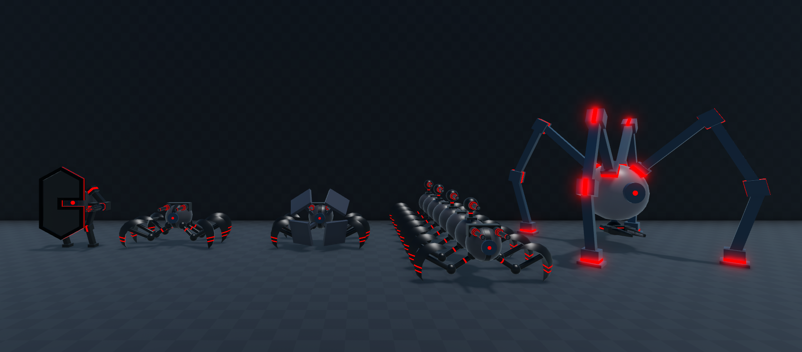
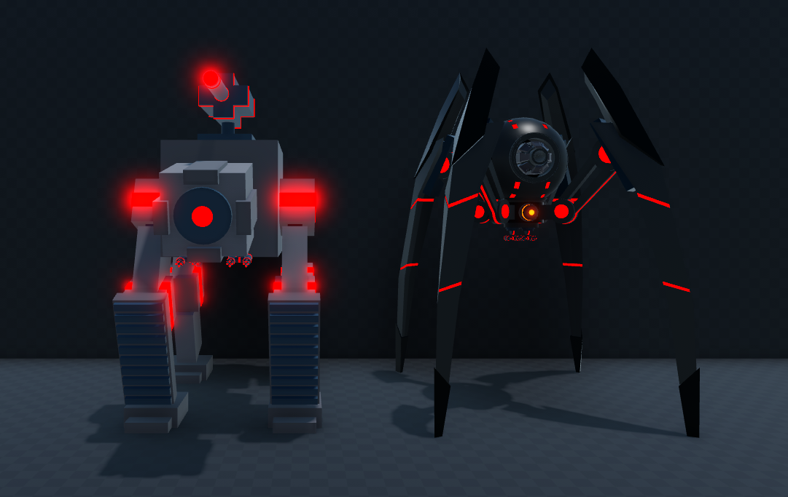
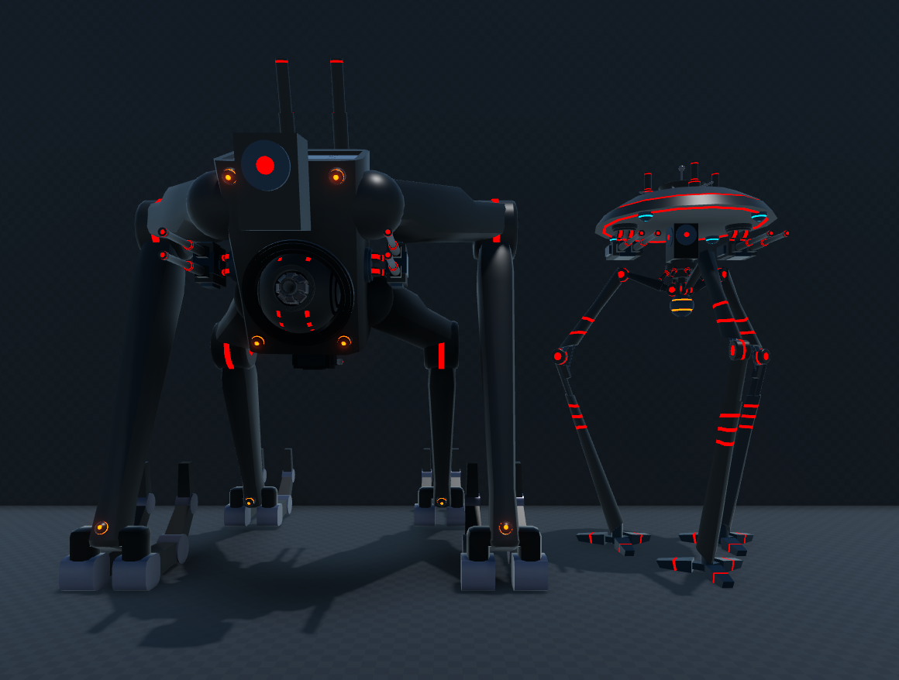
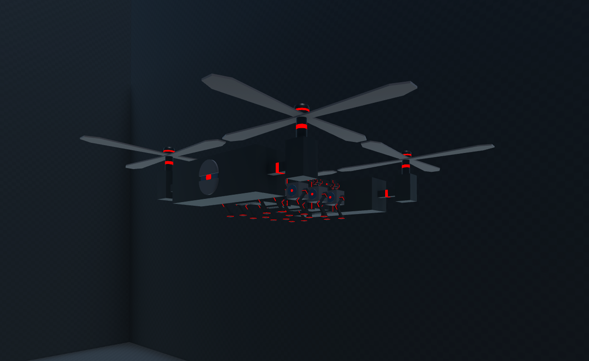

Bot Index
Players will encounter a variety of enemies, from smaller adversaries to formidable bosses, throughout the game.
Small Bots
Small bots are the weakest type of enemies. They can be quickly defeated by targeting their weak points.
Medium Bots
Medium bots can be killed the same way as the small bots, but they are equiped with better weapons and will have armor and a bigger health pool.
Big Bots
Big bots are dangerous enemies with multiple weak points. They are immune to light weapons and can only be defeated by destroying all their weak points.
Boss Bots
Bosses are the toughest challenge players will face. Taking them on directly is not an option, so teamwork is essential. Bosses possess unique abilities, numerous weapons, and can summon additional bots for support. They have a health bar displaying their health status. While hitting weak points will remove significant health, it won't defeat the boss. Prioritizing bosses is crucial for players.
Transport Bots
"Transport bots will deploy new combat robots. Players can shoot these transport bots out of the sky to destroy the cargo they are carrying.
